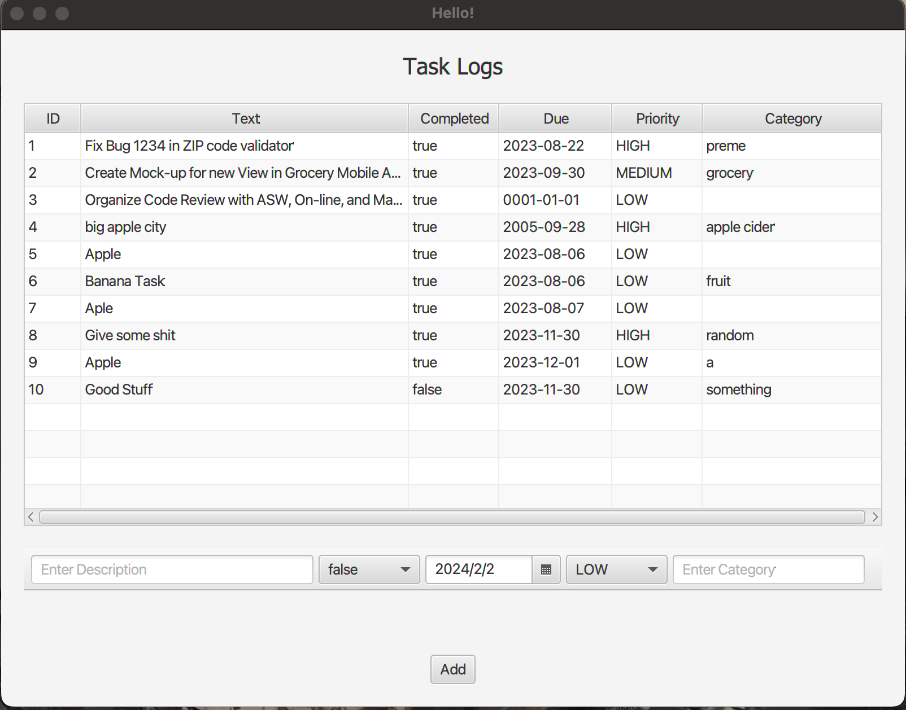

Yuchen Jiang Prod.

Technical Projects
Yijing Divination Program
This project is an OOD design aim to replicate the process of making divination via Yijing Hexagrams. Hexagram are symbols like ䷁ or ䷭. In order to get a divination, the user is expected to primarily use the string method, i.e. input a word or couple words of their choice. Then program would parse the input, interpret the input while translating it into numbers, and then find the corresponding hexagrams via the help of a Hashmap.
In addition, per this specific methodology I have learnt and used, time also plays an important part of the divination; thus, the program would also fetch the time, more specifically, the hour, when the divination is made when interpreting the input. As a result, entering the same string at different times would provide you with different kind of result.
Initially, the program only accepts English letters as valid input; recently, I have found a way to make the program compatible with Chinese characters, specifically refer to characters emcompassed in the CJK Unified Ideographs block of unicode characters.

Tasl log management
This project is a team project, where I am in charge of the writting the controller and the actual interface. JavaFX seems to share a similar syntax with html. The data are stored in a csv file for the time's sake, which could be further improved via using a actual database. Nonetheless, this trivial program support task adding, marking for completion, and sorting features.
